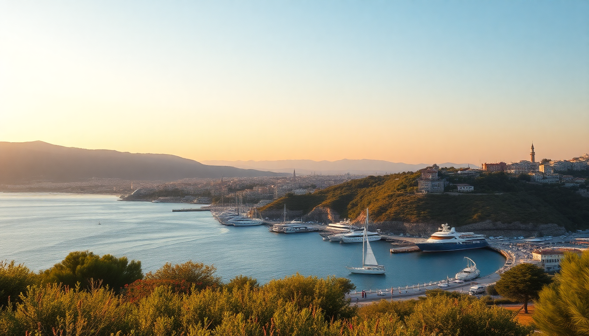

Best Beaches in Turkey: Antalya, Bodrum, Fethiye & Izmir

I spent three weeks hopping between Turkey’s southwest coast last summer — from the rocky coves of Antalya to the party shores of Bodrum, the turquoise lagoons of Fethiye, and the laid-back bays near Izmir. I swam in some absolute stunners, and I wasted a few afternoons on crowded, overrated strips. Here’s what I learned, beach by beach.
What are the best beaches in Antalya?
Antalya’s coastline is long and varied. The city beaches inside the old town (Kaleiçi) are small and rocky — fine for a quick dip after exploring Hadrian’s Gate, but not where you want to spend a day. Head west instead.
- Konyaaltı Beach — A wide pebble-and-sand beach right below the cliffs. Great for sunset swimming, with a long promenade lined with cafes. We grabbed fresh pide at Parlak Restaurant on the beachfront.
- Lara Beach — Fine golden sand, but packed with all-inclusive resort sunbeds. If you’re not staying at a resort, access is limited. We skipped it after one look at the crowd.
- Çıralı Beach — A 45-minute drive from Antalya, but worth it. This is where you go for quiet swimming under the cliffs of Mount Olympos. No loud music. Just sand, sea, and the occasional turtle nest.
- Olympos Beach — Right next to Çıralı, but rougher. The ruins of Olympos are fun to explore, but the beach itself is shingle and gets busy with backpackers from the treehouse hostels.
My pick: Konyaaltı for convenience, Çıralı for a proper beach day. Bring water shoes for both.
Which Bodrum beaches are worth the hype?
Bodrum is famous for its nightlife, but the beaches are hit or miss. The central town beaches near Bodrum Castle are small and crowded with day-trippers. You want to get on a boat or drive out.
- Gümüşlük — My favorite in the Bodrum area. A shallow, calm bay with a few fish restaurants right on the water. We ate grilled octopus at Mimoza Restaurant while the sun set. The beach is pebbly, so water shoes help.
- Türkbükü — The posh beach club scene. Sunbeds cost a fortune, and the water is clear but the vibe is more about being seen than swimming. We had a drink at Maçakızı and left.
- Ortakent Beach (Yahşi) — A long sandy stretch that’s family-friendly. Less pretentious than Türkbükü. There’s a decent beachfront cafe called Sandal Beach for cheap gözleme.
- Bitez Beach — Windy, good for windsurfing. Not great for lounging. We spent an afternoon here and got sandblasted.
If you only have one day, take a gulet boat tour from Bodrum harbor. You’ll hit several small coves (like Karaada) that are inaccessible by land. That’s where the best swimming is.
What are the top beaches in Fethiye?
Fethiye has the most dramatic coastline of the four cities. The water is absurdly clear, and the mountains drop straight into the sea. But some beaches are overrun with package tourists.
- Ölüdeniz (Blue Lagoon) — Yes, it’s stunning. The water is that unreal turquoise you see in photos. But the main beach is packed with sunbeds, and you have to pay to enter the lagoon area. Go early (before 9 AM) or skip the main beach and hike up to Butterfly Valley viewpoint instead.
- Kabak Bay — A hidden cove south of Ölüdeniz. We hiked down a steep dirt path (20 minutes) and found a near-empty beach with a single cafe. The water is deep blue and cold. Totally worth the effort.
- Çalış Beach — The sunset spot. Long, sandy, and windy. Not great for swimming because of the waves, but perfect for a long walk and watching the sun dip behind the islands. We ate at Mujgan Restaurant right on the promenade.
- Gemiler Island — Accessible by boat from Fethiye harbor. There are Byzantine ruins on the island, and the coves around it are excellent for snorkeling. We saw sea turtles near the south shore.
My advice: Skip Ölüdeniz on weekends. Kabak Bay is the real gem.
Where should I swim near Izmir?
Izmir is a big city, and its immediate beaches are not the draw. The good stuff is an hour or two south along the Cesare Peninsula.
- Alaçatı — The most famous beach town near Izmir. The beaches are shallow and windy — perfect for windsurfing. The town itself is full of stone streets and boutique hotels like Vino Hotel. We had lunch at Kosebasi for proper İzmir köfte.
- Çeşme — A livelier beach scene with clubs and beach bars. Ilıca Beach has fine sand and thermal springs just offshore. The water is warmer than anywhere else we swam.
- Sığacık — A small fishing village with a crumbling castle and a calm bay. No fancy clubs, just locals swimming off the jetty. We bought fresh fruit at the Saturday market and ate it on the rocks.
- Şirince — Not a beach, but a hill village worth a detour. It’s famous for fruit wines. We tried the mulberry wine at Artemis Restaurant and bought a bottle to take home.
For a pure beach day, Ilıca is your best bet. For a mix of culture and swimming, base yourself in Alaçatı.
When is the best time to visit these beaches?
The Mediterranean summer is brutal. July and August are scorching — 35°C with no shade on most beaches. Crowds are thick, and prices double.
- May and June — Ideal. Water is warm enough to swim (20-24°C), beaches are half-empty, and the wildflowers are still blooming along the Lycian Way.
- September and October — Also great. The sea is at its warmest (26-28°C), and the tourist crowds thin out after mid-September. We stayed at Hotel Villa Mahal in Fethiye in October and had the pool to ourselves.
- July and August — Only if you have no other choice. Book everything in advance. Bring an umbrella and a lot of sunscreen.
I’d go back in late May or early October. The light is softer, and you can actually find a sunbed without a fight.
Are there any overrated beaches I should skip?
Yes, a few. I walked in with high expectations and left disappointed.
- Cleopatra Beach (Alanya) — It’s fine, but not worth the hype. The sand is supposedly from Cleopatra’s ships, but it’s just a normal sandy beach packed with resort guests. Alanya itself is a concrete sprawl.
- Kaputaş Beach (near Kaş) — Beautiful, yes. But you have to descend 200 steep stairs, and the beach is a tiny strip that fills up by 10 AM. We turned around and went to Patara Beach instead — 18 km of sand, with ancient ruins behind it.
- Bodrum’s main beach — The one right in town by the castle. Rocky, crowded, and you’re swimming next to ferry traffic. Walk 10 minutes east to Bardakçı Bay for a much better spot.
If you want a quiet, underrated beach near Fethiye, try Kıdrak Beach inside the Göcek Islands. It’s a short boat ride from Göcek marina, and it rarely gets busy.
FAQ
What’s the best beach for families with kids? İlıca Beach in Çeşme. The water is shallow and warm, the sand is fine, and there are no big waves. Plenty of cafes with sunbeds and umbrellas for rent. Avoid Kabak Bay — the hike down is steep and not stroller-friendly.
Do I need to rent a car to reach the best beaches? It helps, but you can manage with dolmuş (minibuses) along the main routes. For beaches like Çıralı or Kabak Bay, a car saves time. We rented from Avis in Fethiye downtown and it cost about €30 per day. Buses run to Ölüdeniz and Çeşme from the city centers.
Can I swim year-round in these places? No. The water is swimmable from May to October. In winter (November to March), the sea temperatures drop to 15-18°C, and many beach clubs and cafes close entirely. I tried a January swim in Antalya — it was bracing, not pleasant.
Conclusion
- Best overall beach: Çıralı Beach near Antalya — quiet, natural, and free from the resort crowd.
- Best for a day trip: Kabak Bay near Fethiye — a short hike to a near-empty cove.
- Best for sunset: Çalış Beach in Fethiye — long sandy walk with a cold beer from Mujgan Restaurant.
- Best for windsurfing: Alaçatı near Izmir — shallow and consistently windy.
- Skip: Cleopatra Beach in Alanya and Bodrum’s town beach — both overrated and overcrowded.